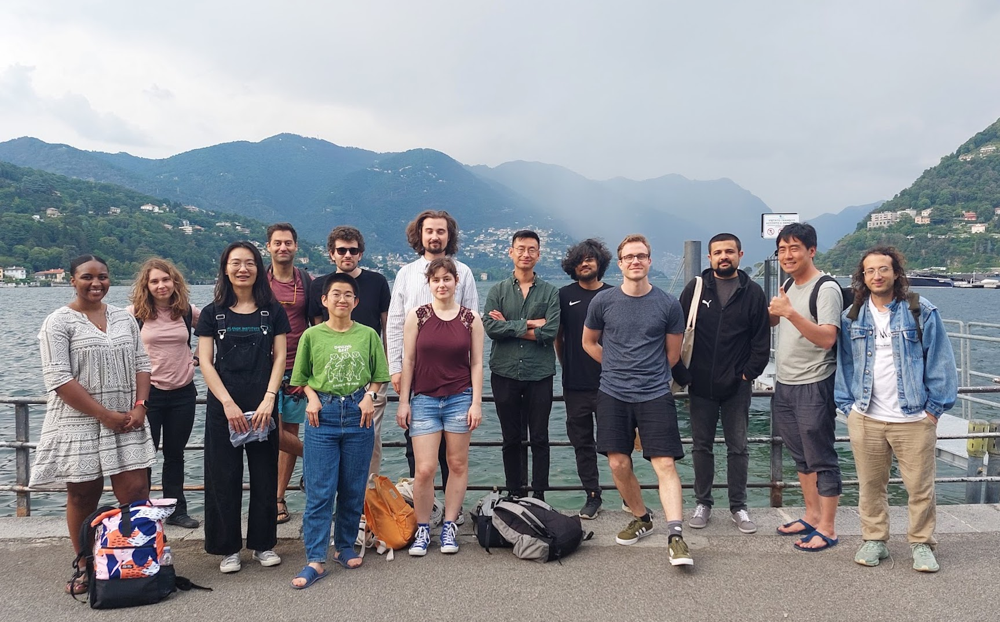

Human and Machine Cognition Lab
What makes humans so uniquely intelligent?
How do people make the best use of limited cognitive resources?
What are the unique algorithms we use to learn from other people?

About the lab
Led by Charley Wu, the Human and Machine Cognition (HMC) Lab works at the intersection of Human Cognitive Science and Machine Learning research. We seek to use insights from human cognition to improve machine learning methods, while also using advances in machine learning as tools for understanding human intelligence. In practice, this often involves using experiments to study an interesting feature of human cognition (e.g., rapid learning in novel environments) and then using computational models to understand the cognitive principles behind the phenomenon.
Experiments are typically performed online in the form of an interactive game, in the lab using computers or virtual reality equipment, or occur naturally through the analysis of real-world data. Our computational models are often inspired by reinforcement learning or machine learning methods, and are validated by predicting human behavior, neural activity, or through evolutionary simulations.
Big news! The lab will be moving to TU Darmstadt, where Charley is a W3 (tenured) Professor of Computational Cognitive Science. Supported by a LOEWE Start Professorship and an ERC Starting grant “C4: Compositional Compression in Cognition and Culture”, we are currently seeking to fill the following positions:
- Fully-funded PhD position on cultural evolution (4 years at 75% E13; upgradable to 100% after 3 months)
- Fully-funded Postdoc position on social learning/cultural evolution (3 years at 100% E14)